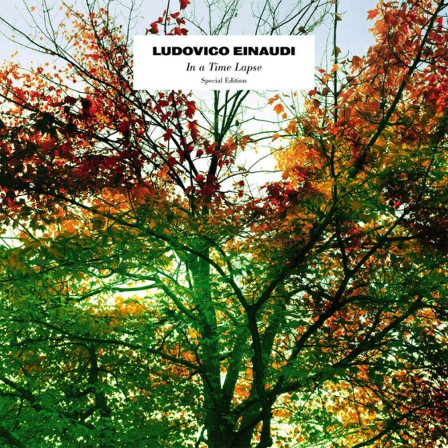

In A Time Lapse - Special Edition
2023
|
|
|

|
Decca Records
- Corale
- Time Lapse
- Life
- Run
- Walk
- Brothers
- Orbits
- Two Trees
- Waterways
- Corale Solo
- Newton’s Cradle
- Discovery At Night
- Experience
- Underwood
- Burning
- Bever
- The Dark Bank of Clouds
- Sarabande
- Ronald’s Dream
- Circles (based on Experience) – Greta Svabo Bech
- Time Lapse – Dot Major remix
- Walk – Starkey remix
- Walk – Phaeleh remix
- Experience – Starkey remix
- Time Lapse – Steven Siegel remix
- Discovery At Night – Lippok remix
|